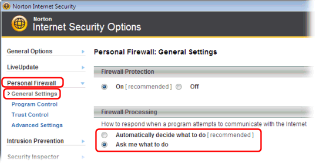
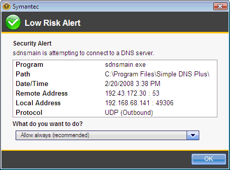

Norton 360 / Internet Security are products from Symantec - http://www.symantec.com
The "Personal Firewall" in Norton 360 / Internet Security monitors network traffic by application / program.
By default it is configured to "Automatically decide what to do" when programs attempt to communicate with the Internet.
With this default setting, it should automatically allow Simple DNS Plus to communicate freely.
If however you have this setting set to "Ask me what to do":

it will prompt you when Simple DNS Plus attempts to communicate over the Internet.
Just accept the default "Allow always" and click the "OK" button.

Simple DNS Plus consists of several executable module (applications) which each must be granted access to the Internet. These modules are:
- "Simple DNS Plus - Core Engine" (sdnsmain.exe)
- "Simple DNS Plus - DNS Look Up" (lookup.exe)
- "Simple DNS Plus - DNS Record Editor" (editrecs.exe)
- "Simple DNS Plus - GUI" (sdnsgui.exe)